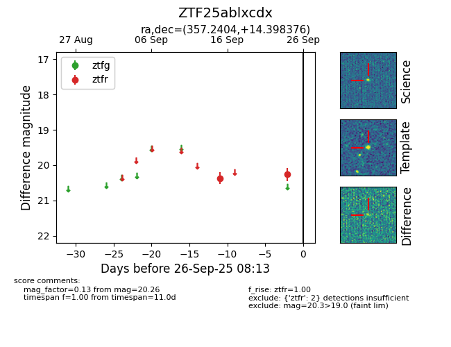

FINK: ZTF25ablxcdx
Lasair: ZTF25ablxcdx
ALeRCE: ZTF25ablxcdx
ZTF25ablxcdx (ztf,fink)
equatorial (ra, dec) = (357.2404,+14.39838)
galactic (l, b) = (100.9687,-45.79217)

last ztfr=20.26
2 ztfr detections